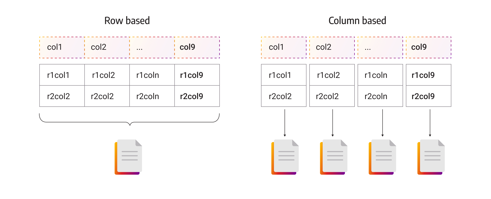
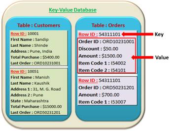

Document, key-value, wide-column, and graph stores — when and why to go beyond relational

Relational databases excel when data is highly structured, relationships are complex, and ACID guarantees are required. NoSQL systems emerged to address workloads where these assumptions break down:
The term "NoSQL" is misleading. Many NoSQL systems now support SQL-like query languages (e.g., CQL in Cassandra, N1QL in Couchbase). Several support multi-document transactions (MongoDB since 4.0, DynamoDB with transactions). "NoSQL" is best read as "Not Only SQL" — these are complementary tools, not replacements.
The simplest model: store and retrieve opaque values by a unique key. O(1) get/put/delete. Examples: Redis, DynamoDB, Riak. Best for: caching, session storage, feature flags, leaderboards.
Extend key-value by storing structured, self-describing documents (JSON/BSON). Rich query languages, secondary indexes, aggregation pipelines. Examples: MongoDB, Couchbase, Firestore. Best for: catalogs, user profiles, CMS, event logs.
Rows have a primary key; each row may have a different set of columns. Optimized for write-heavy analytical workloads. Examples: Apache Cassandra, HBase, Google Bigtable. Best for: time-series, IoT, recommendations.
Nodes and edges with properties; traversal queries are native (no expensive joins). Examples: Neo4j, Amazon Neptune, ArangoDB. Best for: social networks, fraud detection, knowledge graphs, recommendation engines.

Redis is an in-memory key-value store that supports rich value types: strings, lists, sets, sorted sets, hashes, bitmaps, and streams. Because it operates in RAM, reads and writes complete in microseconds. Data is optionally persisted via RDB snapshots or AOF (append-only file) logging.
AWS DynamoDB is a fully managed key-value and document store. Each table has a primary key (partition key, optionally with a sort key). Horizontal sharding is automatic. Provides single-digit millisecond latency at any scale. Pricing is per read/write unit; provisioned or on-demand modes.
MongoDB stores documents as BSON (Binary JSON). A document can embed sub-documents and arrays, allowing complex structures to be retrieved in a single operation (no joins required for common access patterns).
| Embed (sub-document) | Reference (foreign key) | |
|---|---|---|
| Use when | Data is accessed together; 1:few relationship; child rarely changes independently | Many-to-many; data is large; child updated frequently; shared across documents |
| Read cost | 1 query, 1 document fetch | 2 queries (lookup reference, then fetch) |
| Write cost | Update the whole document | Update child independently |
| Duplication | Data may be duplicated if shared | No duplication; authoritative source |
Cassandra uses a partition key to hash data across nodes and a clustering key to sort rows within a partition. This design makes writes extremely fast (log-structured merge-tree storage), but schema design must be driven by query patterns.
In a distributed system, you can guarantee at most two of three properties simultaneously:
Consistency — every read receives the most recent write (or an error)
Availability — every request receives a (non-error) response, even if it may be stale
Partition tolerance — the system continues operating despite network partitions
Since network partitions cannot be avoided in practice, the real trade-off is between C and A.
| System Type | Trade-off | Examples | Best For |
|---|---|---|---|
| CP (Consistent + Partition-tolerant) | May reject requests during partitions to stay consistent | HBase, MongoDB (with majority write concern), Zookeeper | Financial data, inventory, config management |
| AP (Available + Partition-tolerant) | Always responds, but response may be stale | Cassandra, CouchDB, DynamoDB (eventual consistency) | Social feeds, shopping carts, DNS, CDN |
| ACID (RDBMS) | BASE (NoSQL) | |
|---|---|---|
| Acronym | Atomic, Consistent, Isolated, Durable | Basically Available, Soft state, Eventually consistent |
| Consistency | Strong (immediately consistent after commit) | Eventual (replicas converge over time) |
| Availability | May reject operations during failures | Always responds (even if stale) |
| Suitable for | Banking, e-commerce, healthcare records | Social media, analytics, IoT, caching |
| If you need… | Consider |
|---|---|
| Complex joins, strong ACID, mature tooling | PostgreSQL, SQL Server, MySQL |
| Flexible schema, hierarchical documents, fast aggregations | MongoDB, Couchbase |
| Millisecond key lookups, caching, pub/sub | Redis, Memcached |
| Massive write throughput, time-series, multi-region | Cassandra, HBase |
| Graph traversal, relationship queries | Neo4j, Amazon Neptune |
| Semantic search, vector similarity | Pinecone, Weaviate, pgvector (see L43) |